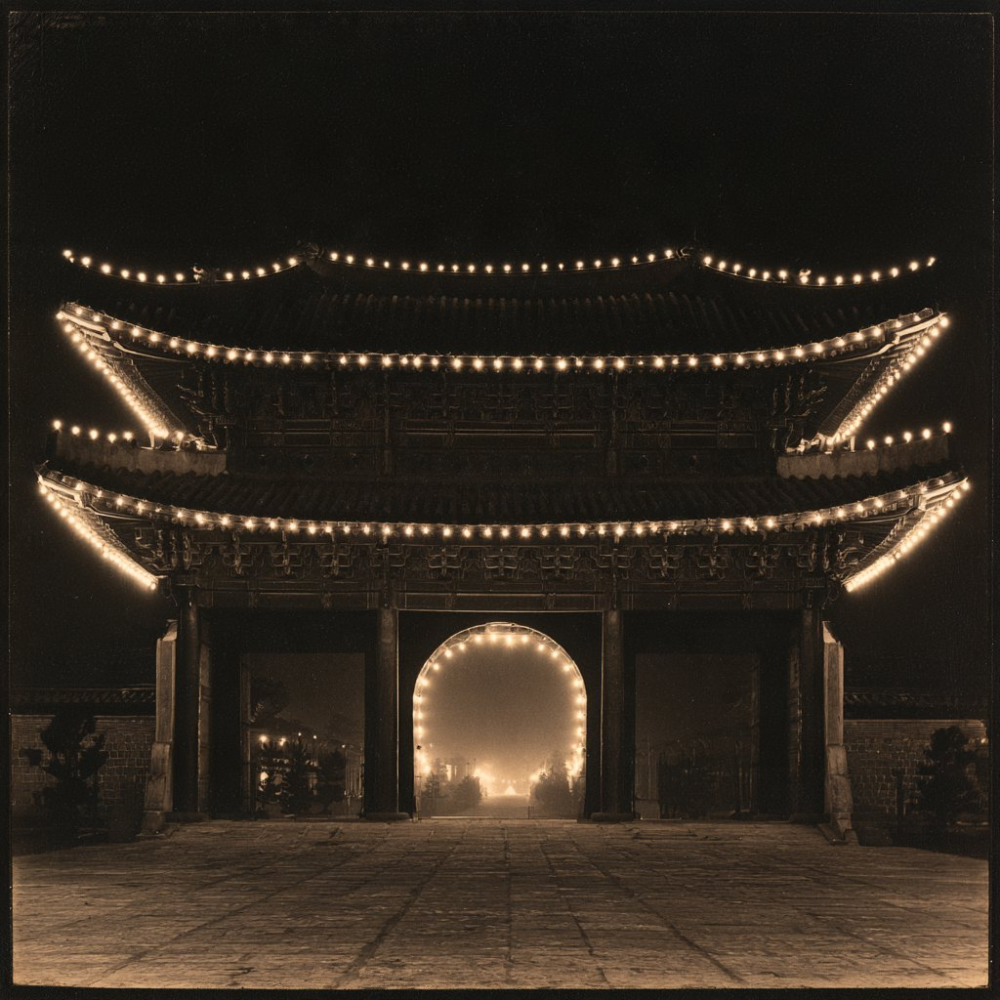

경성사건박람회 · 회장

그림 · 재현경성야록 부록 · 자정에 열고 첫닭이 울면 닫소
경성사건박람회
지면에서 끗나지 안은 사건이 소설 · 노래 · 활동사진이 되어 백 년을 건너온 긔록.
관람법 · 보는 법
손가락 셋이면
다 보오
- 옆으로 밀기관 카드 · 책 · 음반을 넘겨 고르오
- 아래로 끌기가운데 카드를 끌어내리면 그 안으로 드러가오
- 돌리기연표 다이알을 돌려 백 년을 건너오
관에 드러설 때마다 수첩에 도장이 찍히오. 네 곳을 다 돌면 상뎜 할인권이 나오오.
입장권 · 1929 조선박람회 · 어른
반권을 뜨드시압

반
권
개찰
권
반권을 오른쪽으로 밀어 뜨드시압 — 또는 아래 단추